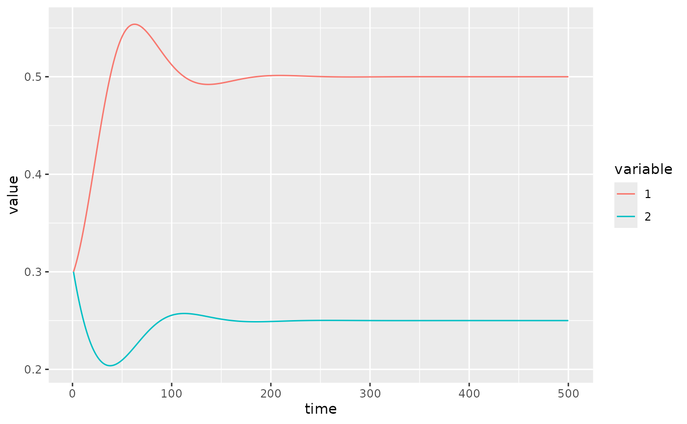
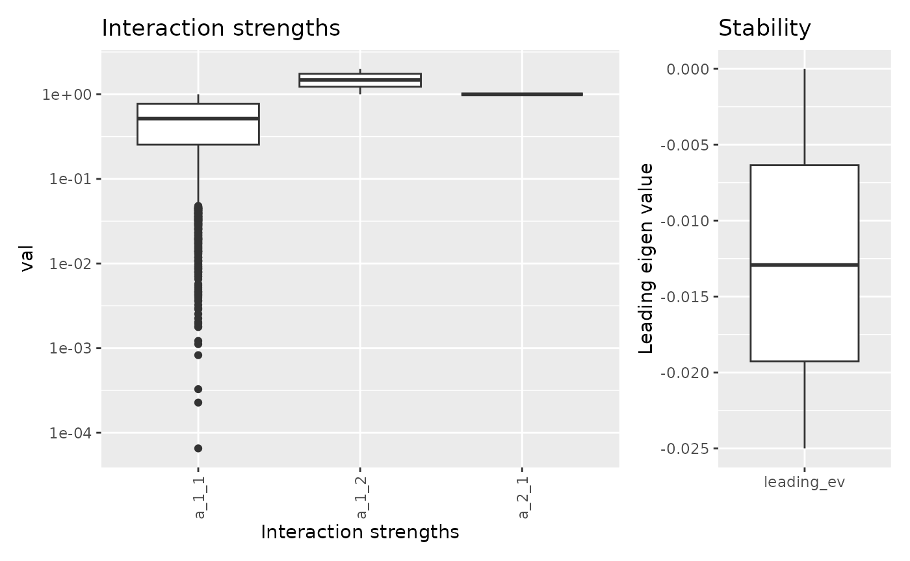
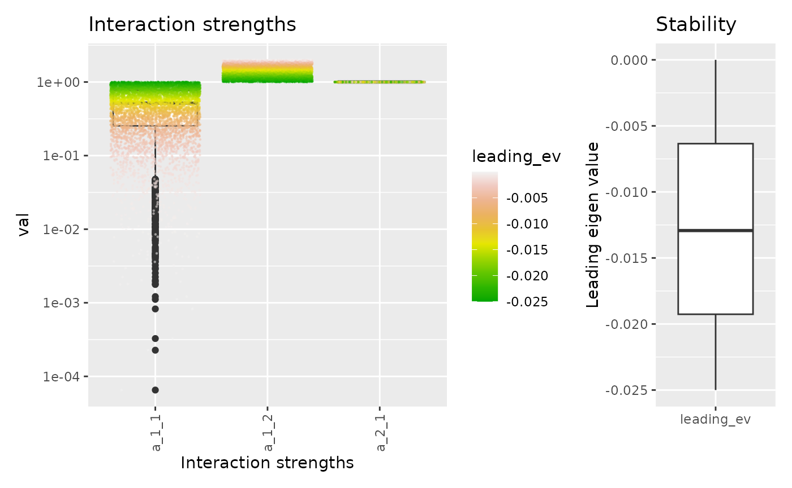
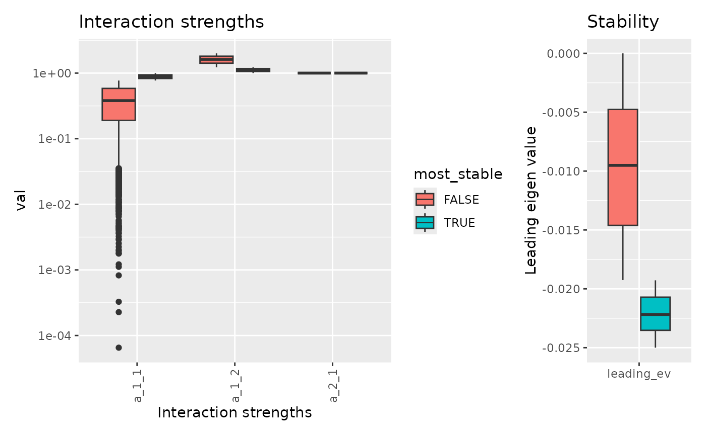
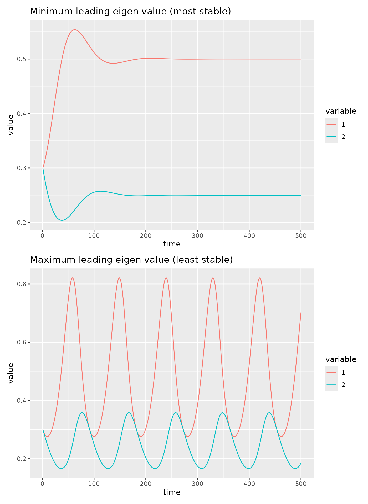
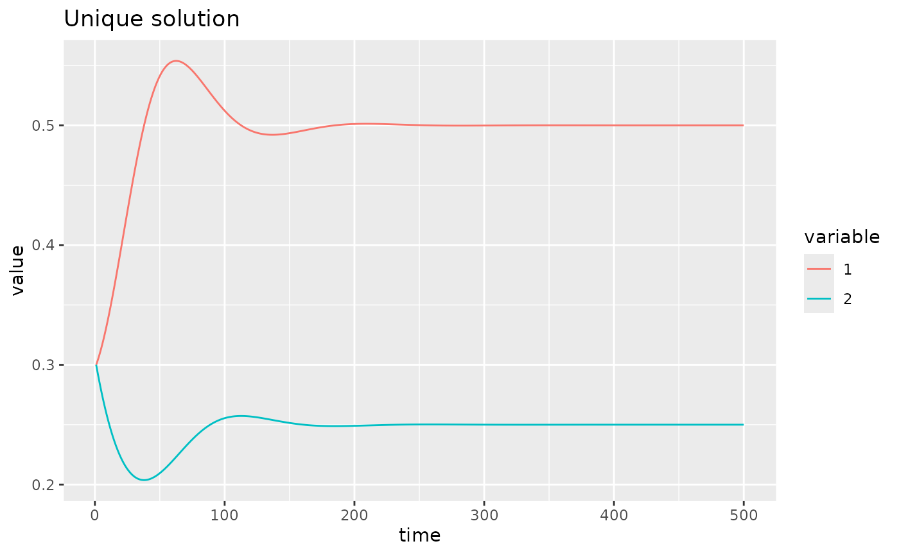

Get started with fwebinfr
Kevin Cazelles
26-02-2024
get_started.RmdThe goal of the package fwebinfr is to predict
interaction strenghts in food web models by solving Linear Inverse
Models (LIM). fwebinfr provides a user-friendly interface
to create such problems and leverages limSolve
behind the scenes to solve them.
Basic 2 species system
Here is a built-in example with 2 species. First, we load the package.
This example is available in the package and is called using
fw_example_2species().
# a first example
net <- fw_example_2species()
net## $A
## [,1] [,2]
## [1,] -0.1 -0.2
## [2,] 0.1 0.0
##
## $B
## [1] 0.50 0.25
##
## $R
## [1] 0.10 -0.05
##
## $model
## function (t, y, pars)
## {
## return(list((pars$A %*% y + pars$R) * y))
## }
## <bytecode: 0x559ed3d51d50>
## <environment: namespace:fwebinfr>
##
## $leading_ev
## [1] -0.025
##
## attr(,"class")
## [1] "fw_model"It is an object of class fw_model that includes all
details needed for the inference. For the sake of the example, matrix A
contains the real interaction, by default, none will be used for the
inference as there are interpreted as unkown according to atrix
U. A quick visualisation of the dynamics.
fw_ode_plot(net, rep(0.3, 2), seq(1, 500, 0.1))
Infering interaction strengths
We now call fw_infer() which requires an object of class
fw_problem we obtain calling
fw_as_problem().
res <- fw_infer(fw_as_problem(net))## Warning in lsei(E = E, F = F, G = G, H = H): No equalities - setting type = 2
class(res)## [1] "fw_predicted"
dim(res$prediction)## [1] 3000 4
head(res$prediction)## a_1_1 a_2_1 a_1_2 leading_ev
## 1 1.0000000 1 1.000000 -0.02500000
## 2 0.7199913 1 1.280009 -0.01799978
## 3 0.6689279 1 1.331072 -0.01672320
## 4 0.8436194 1 1.156381 -0.02109049
## 5 0.8447336 1 1.155266 -0.02111834
## 6 0.7204231 1 1.279577 -0.01801058Note that we can also use extra parameters of the
limSolve::xsample() that is called ultimately.
res <- fw_infer(fw_as_problem(net), burninlength = 5000, iter = 5000, type = "mirror")## Warning in lsei(E = E, F = F, G = G, H = H): No equalities - setting type = 2
class(res)## [1] "fw_predicted"Here, burninlength = 5000, iter and
type are actually parameters passed to
limSolve::xsample(). The output is an object of class
fw_predicted which is a list of two elements: 1.
prediction a data frame of the prediction, 2.
problem the orignal problem.
dim(res$prediction)## [1] 5000 4
head(res$prediction)## a_1_1 a_2_1 a_1_2 leading_ev
## 1 1.0000000 1 1.000000 -0.02500000
## 2 0.7985890 1 1.201411 -0.01996472
## 3 0.7522415 1 1.247758 -0.01880604
## 4 0.4226266 1 1.577373 -0.01056567
## 5 0.6762447 1 1.323755 -0.01690612
## 6 0.4962632 1 1.503737 -0.01240658There are functions to quickly eplore the result. For the range of
interaction strengths can be used visualize with
fw_range_plot().
fw_range_plot(res)
This function also allows one to see the individual points colored according to their stability.
fw_range_plot(res, show_points = TRUE)
There is also an option to compare the most stable set of parameters to the rest of value. By default, it compares the 25% most stable systems to the rest of the systems.

For any result, we can check the food web predicted:
fw_predict_A(res, 1)## [,1] [,2]
## [1,] -0.1 -0.2
## [2,] 0.1 0.0
fw_predict_A(res, 1000)## [,1] [,2]
## [1,] -0.006261394 -0.3874772
## [2,] 0.100000000 0.0000000as well as the biomass (which should equal the one we provided).
fw_predict_B(res, 1)## [1] 0.50 0.25
fw_predict_B(res, 1000)## [1] 0.50 0.25Compare most and least stable systems
Let’s plot the dynamics for the system with the min and max leading eigen value.
# we create one new `fw_problem` object with the most stable system and another one
# with the the leas stable system.
net_most_stable <- fw_model(
A = fw_predict_A(res, which.min(res$prediction$leading_ev)),
B = fw_predict_B(res, which.min(res$prediction$leading_ev)),
R = net$R
)
net_least_stable <- fw_model(
A = fw_predict_A(res, which.max(res$prediction$leading_ev)),
B = fw_predict_B(res, which.max(res$prediction$leading_ev)),
R = net$R
)
p1 <- fw_ode_plot(net_most_stable, rep(0.3, 2), seq(1, 500, 0.1)) +
ggtitle("Minimum leading eigen value (most stable)")
p2 <- fw_ode_plot(net_least_stable, rep(0.3, 2), seq(1, 500, 0.1)) +
ggtitle("Maximum leading eigen value (least stable)")
p1 / p2
Working with known interactions
In the example above, all non-null interactions are regarded as
unknown once the fw_model object is passed to
fw_problem. In some cases, part of the interaction may be
known. To specify what interactions are known, we define U. For instance
let’s assume A[1,1] is known and equals -0.1.
# use the U matrix
U <- res$problem$U
# set the first interaction to known
U$unknown[1] <- FALSE
res2 <- fw_problem(A = net$A, B = net$B, R = net$R, U) |>
fw_infer()## Warning in (function (A = NULL, B = NULL, E = NULL, F = NULL, G = NULL, : the
## problem has a single solution; this solution is returned as function value
res2## $prediction
## a_2_1 a_1_2 leading_ev
## 1 1 1 -0.025
##
## $problem
## $A
## [,1] [,2]
## [1,] -0.1 -0.2
## [2,] 0.1 0.0
##
## $B
## [1] 0.50 0.25
##
## $R
## [1] 0.10 -0.05
##
## $U
## name row col unknown value
## 1 a_2_1 2 1 TRUE 0.1
## 2 a_1_2 1 2 TRUE -0.2
## 3 a_1_1 1 1 FALSE -0.1
##
## $sdB
## NULL
##
## $model
## function (t, y, pars)
## {
## return(list((pars$A %*% y + pars$R) * y))
## }
## <bytecode: 0x559ed3d51d50>
## <environment: namespace:fwebinfr>
##
## attr(,"class")
## [1] "fw_problem"
##
## attr(,"class")
## [1] "fw_predicted"As mentioned by the warning, there is only one solution here, the one solution we started with.
uniq_sys <- fw_model(
A = fw_predict_A(res2, 1),
B = fw_predict_B(res2, 1),
R = net$R
)
fw_ode_plot(uniq_sys, rep(0.3, 2), seq(1, 500, 0.1)) +
ggtitle("Unique solution")